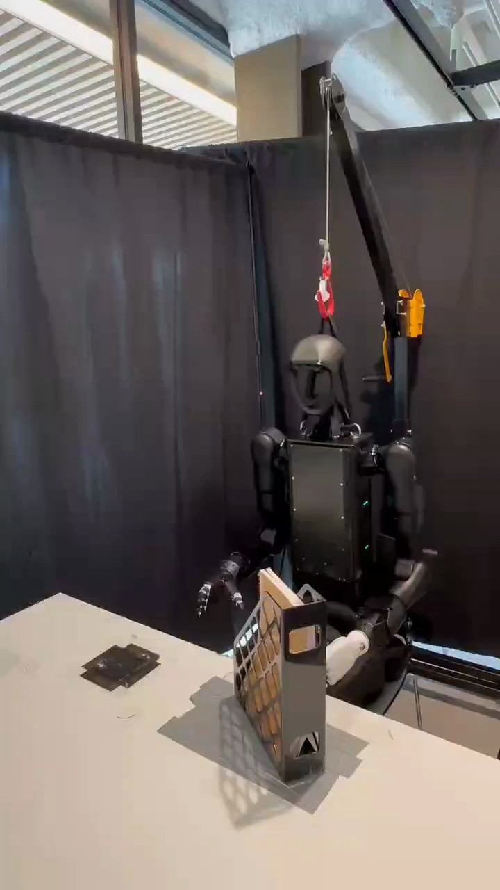

Humanoid Everyday · human-robot-4__hand_over_book_from_magazine_stand
Hand over book from magazine stand

Visual review action_review.json
{
"prompt_protocol": "humanoid_action_v1",
"prompt_provenance": "visually_authored_from_video_and_initial_frame",
"reviewed_contact_sheets": [
"sheet_001.jpg",
"sheet_002.jpg",
"sheet_003.jpg"
],
"inspected_frame_stride": 2,
"inspected_sampled_frame_count": 164,
"initial_scene": "Front-facing humanoid behind a tabletop magazine stand containing an upright book with a tan visible reverse and pale page edges. The articulated right hand is to image left; the articulated left hand rests low in front of the left hip, behind the stand.",
"observed_sequence": [
{
"source_frame_interval_inclusive": [
0,
46
],
"action": "Right arm raises its open hand toward the exposed book edge; left arm remains low near the hip.",
"confidence": "high"
},
{
"source_frame_interval_inclusive": [
47,
163
],
"action": "Right hand descends around the exposed side of the upright book and closes its fingers to establish a grasp while the book remains in the stand. Contact is partly occluded by the stand lattice.",
"confidence": "high"
},
{
"source_frame_interval_inclusive": [
164,
213
],
"action": "Right hand pulls the book upward from the stand, lifts it clear, and carries it outward to the robot's right toward the recipient.",
"confidence": "high"
},
{
"source_frame_interval_inclusive": [
214,
239
],
"action": "A person reaches from image left as the robot presents the book; the person contacts its lower portion and closes a hand around it while the robot maintains its grasp.",
"confidence": "high"
},
{
"source_frame_interval_inclusive": [
240,
265
],
"action": "The person supports the book with its purple cover facing the camera, while the robot's right hand remains at the opposite side during coordinated handover.",
"confidence": "high"
},
{
"source_frame_interval_inclusive": [
266,
286
],
"action": "The person draws the book up and away to image left; the robot opens its right fingers and relinquishes the book. By frame 286 the empty right hand is fully visible and the book is almost out of view.",
"confidence": "high"
},
{
"source_frame_interval_inclusive": [
287,
326
],
"action": "The person and book leave the image; the robot retracts and lowers its empty right hand, and the stand remains on the table without the extracted book.",
"confidence": "high"
}
],
"arm_hand_roles": {
"right": "Sole manipulating robot hand: grasps the book edge, extracts and lifts it, extends it to the person, releases it during the person's pull, and lowers empty.",
"left": "Remains low at the left hip behind the stand; no visible grasp of the book or active support of the stand, and no hand-to-hand robot transfer.",
"person": "Reaches from the robot's right/image left, grasps the offered book, shares support briefly with the robot, and removes it after release.",
"coordination": "Robot right-hand hold overlaps the person's grasp before the person takes full support. Robot left hand does not participate."
},
"anatomical_side_evidence": {
"confidence": "high",
"evidence": "The initial PNG shows the front of the torso and face. The active arm visibly attaches to the shoulder on image left, the robot's anatomical right; its upper arm, elbow, wrist and articulated fingers form a continuous visible chain. The opposite arm attaches to the image-right shoulder and rests low at the robot's anatomical left hip.",
"uncertainty": "None for robot arm sides; the person's full body is outside view, so their anatomical hand side is not assigned."
},
"evidence_frame_indices": [
0,
48,
120,
164,
180,
196,
214,
226,
240,
260,
266,
270,
272,
274,
276,
286,
326
],
"initial_png_inspected_at_native_resolution": true,
"inspection_coverage": "All three contact sheets visually inspected, covering 164 samples at stride 2 across frames 0–326; source initial PNG and all listed native transition/final images inspected at 720×1280.",
"critical_transition_details": "Native images verify right-hand extraction (164–214), recipient grasp and shared support (226–260), transfer (266–286), and empty robot hand/final stand (326).",
"manipulation_outcome": "Book successfully transferred to the person; robot hand visibly empty and stand left without the extracted book.",
"selected_execution_status": "success",
"source_overall_execution_status": "success",
"outcome": "The person carries the extracted book out of view; the robot lowers its empty right hand.",
"outcome_confidence": "high",
"confidences": {
"anatomical_side": "high",
"book_extraction": "high",
"person_handover": "high",
"terminal_state": "high"
},
"uncertainties": [
"The book's exact identity and weight cannot be established visually; the source instruction's description of a heavier object is not adopted.",
"The precise first contact within the stand is partly occluded by its lattice, but the right-hand grip and subsequent extraction are visible.",
"The recipient's anatomical hand side cannot be established from the isolated visible forearm and hand."
],
"annotation_discrepancies": [],
"annotation_verification": "Observed extraction and person handover agree with the original task. No visible contradiction; object weight is unverified.",
"retained_reference": "Complete original single-task sequence, frames 0 through 326 inclusive; no trimming, cropping, resizing or re-encoding.",
"protocol_final_checks": {
"target_identifiable_from_initial_frame": true,
"action_matches_full_sequence": true,
"terminal_state_matches_video": true
},
"notes": "Left hand is recorded as idle evidence and omitted from usable action prompt because it does not contribute to manipulation.",
"terminal_state": "The person has carried the book out of view after the robot releases it. The robot's right hand is empty and lowered beside the stand; the left hand remains low at the hip, and the magazine stand stays upright on the table without the extracted book.",
"video_id": "human-robot-4",
"dataset": "Humanoid_Everyday",
"dedicated_review_agent": "review_he_human_robot_4",
"review_source_video": "Humanoid_Everyday/human-robot-4__hand_over_book_from_magazine_stand/third_person/original/original.mp4",
"source_frame_count": 327,
"source_fps": 29.908536585365855,
"native_detail_frames": [
48,
120,
164,
180,
196,
214,
226,
240,
260,
266,
270,
272,
274,
276,
286,
326
],
"world_model_prompt": "The robot grasps the exposed edge of the upright book in the magazine stand with its right hand, lifts it clear, and extends it toward the person's outstretched hand. Once the person grips the book, the robot opens its right fingers to let the person take it away, then lowers its empty hand. Keep the camera fixed; preserve robot geometry, physically valid joint motion, and normal gripper opening and closing.",
"original_task_instruction": "Grabbing a book from a magazine stand and handing it to a person, requiring careful extraction and stable handover of a heavier object.",
"selected_segment": {
"start_frame": 0,
"end_frame_exclusive": 327,
"reason": "Complete original single-task reference; no cropping or trimming requested."
},
"source_video_sha256": "a37e87deb5ada2df11359d183a102d0b4fb71253db2cff8bb51ece48e4736851",
"review_completed_at": "2026-10-13T17:24:10.302293+00:00"
}